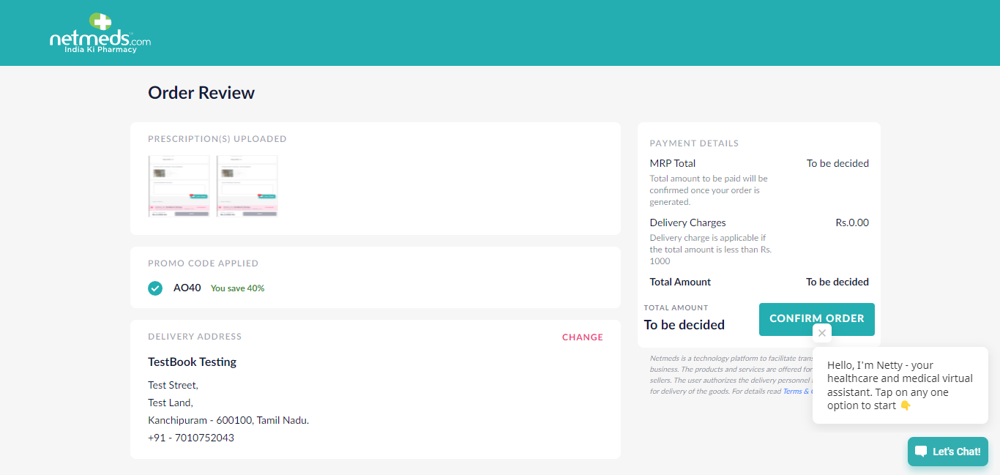

Tests
0 test(s) passed
4 test(s) failed, 0 others
Steps
20 step(s) passed
12 step(s) failed, 0 others
Tests
-
M2 Search and Add Medicine - Upload Prescription Feb 24, 2022 03:34:50 PM failFeb 24, 2022 03:34:50 PM Feb 24, 2022 03:36:08 PM 0h 1m 18s+347ms
Status Timestamp Details check_circle 3:34:50 PM ************* Get Call Flow******************** check_circle 3:34:56 PM Successfully navigated to home page check_circle 3:35:06 PM Successfully navigated to Add Prescription page check_circle 3:35:23 PM Prescription Uploaded Sucessfully check_circle 3:35:32 PM Successfully Clicked on Search Medicines check_circle 3:35:39 PM Successfully navigated to Search Medicine Page check_circle 3:35:51 PM Successfully Product was searched and added to the cart cancel 3:36:08 PM autoIt_Upload_SearchMedicine FAILED cancel 3:36:08 PM cancel 3:36:08 PM Snapshot below: com.aventstack.extentreports.ExtentTest@69eb86b4 -
M2 Get Call From netmeds - Upload Prescription Feb 24, 2022 03:36:14 PM failFeb 24, 2022 03:36:14 PM Feb 24, 2022 03:37:35 PM 0h 1m 20s+843ms
Status Timestamp Details check_circle 3:36:14 PM ************* Get Call Flow******************** check_circle 3:36:53 PM Successfully navigated to home page check_circle 3:37:03 PM Successfully navigated to Add Prescription page check_circle 3:37:19 PM Prescription Uploaded Sucessfully check_circle 3:37:30 PM Successfully Clicked on Search Medicines cancel 3:37:35 PM call_Upload FAILED cancel 3:37:35 PM cancel 3:37:35 PM Snapshot below: com.aventstack.extentreports.ExtentTest@648ee871 - 
-
M2 Get Call From netmeds Past RX Feb 24, 2022 03:37:41 PM failFeb 24, 2022 03:37:41 PM Feb 24, 2022 03:39:34 PM 0h 1m 52s+692ms
Status Timestamp Details check_circle 3:37:41 PM ************* Get Call Flow******************** check_circle 3:38:18 PM Successfully navigated to home page check_circle 3:38:26 PM Successfully navigated to Add Prescription page check_circle 3:38:39 PM Added the Past RX Prescription check_circle 3:38:49 PM Successfully Clicked on Search Medicines check_circle 3:38:52 PM AO40 You save 40% check_circle 3:38:59 PM Successfully Clicked on Change Address cancel 3:39:34 PM m2_getCall FAILED cancel 3:39:34 PM org.openqa.selenium.TimeoutException: Timed out after 30 seconds waiting for element to be clickable: Proxy element for: DefaultElementLocator 'By.xpath: (//a[contains(text(),'+ ADD NEW ADDRESS')])[1]' Build info: version: '2.52.0', revision: '4c2593cfc3689a7fcd7be52549167e5ccc93ad28', time: '2016-02-11 11:22:43' System info: host: 'NMSLAP356', ip: '192.168.8.100', os.name: 'Windows 10', os.arch: 'amd64', os.version: '10.0', java.version: '15.0.2' Driver info: org.openqa.selenium.chrome.ChromeDriver Capabilities [{mobileEmulationEnabled=false, timeouts={implicit=0, pageLoad=300000, script=30000}, hasTouchScreen=false, platform=ANY, acceptSslCerts=false, goog:chromeOptions={debuggerAddress=localhost:9222}, webauthn:extension:credBlob=true, acceptInsecureCerts=false, webStorageEnabled=true, browserName=chrome, takesScreenshot=true, javascriptEnabled=true, setWindowRect=false, webauthn:extension:largeBlob=true, unexpectedAlertBehaviour=ignore, applicationCacheEnabled=false, rotatable=false, chrome={chromedriverVersion=97.0.4692.71 (adefa7837d02a07a604c1e6eff0b3a09422ab88d-refs/branch-heads/4692@{#1247})}, takesHeapSnapshot=true, pageLoadStrategy=normal, strictFileInteractability=false, databaseEnabled=false, handlesAlerts=true, version=98.0.4758.102, browserConnectionEnabled=false, proxy={}, nativeEvents=true, locationContextEnabled=true, cssSelectorsEnabled=true, webauthn:virtualAuthenticators=true}] Session ID: a1832a271444bd55217972980d43653d at org.openqa.selenium.support.ui.WebDriverWait.timeoutException(WebDriverWait.java:80) at org.openqa.selenium.support.ui.FluentWait.until(FluentWait.java:261) at com.Nm.Base.BaseClass.btncli(BaseClass.java:111) at com.Nm.website_stage.M2_Flow_Search.m2_getCall(M2_Flow_Search.java:340) at java.base/jdk.internal.reflect.NativeMethodAccessorImpl.invoke0(Native Method) at java.base/jdk.internal.reflect.NativeMethodAccessorImpl.invoke(NativeMethodAccessorImpl.java:64) at java.base/jdk.internal.reflect.DelegatingMethodAccessorImpl.invoke(DelegatingMethodAccessorImpl.java:43) at java.base/java.lang.reflect.Method.invoke(Method.java:564) at org.testng.internal.MethodInvocationHelper.invokeMethod(MethodInvocationHelper.java:133) at org.testng.internal.TestInvoker.invokeMethod(TestInvoker.java:598) at org.testng.internal.TestInvoker.invokeTestMethod(TestInvoker.java:173) at org.testng.internal.MethodRunner.runInSequence(MethodRunner.java:46) at org.testng.internal.TestInvoker$MethodInvocationAgent.invoke(TestInvoker.java:824) at org.testng.internal.TestInvoker.invokeTestMethods(TestInvoker.java:146) at org.testng.internal.TestMethodWorker.invokeTestMethods(TestMethodWorker.java:146) at org.testng.internal.TestMethodWorker.run(TestMethodWorker.java:128) at java.base/java.util.ArrayList.forEach(ArrayList.java:1511) at org.testng.TestRunner.privateRun(TestRunner.java:794) at org.testng.TestRunner.run(TestRunner.java:596) at org.testng.SuiteRunner.runTest(SuiteRunner.java:377) at org.testng.SuiteRunner.runSequentially(SuiteRunner.java:371) at org.testng.SuiteRunner.privateRun(SuiteRunner.java:332) at org.testng.SuiteRunner.run(SuiteRunner.java:276) at org.testng.SuiteRunnerWorker.runSuite(SuiteRunnerWorker.java:53) at org.testng.SuiteRunnerWorker.run(SuiteRunnerWorker.java:96) at org.testng.TestNG.runSuitesSequentially(TestNG.java:1212) at org.testng.TestNG.runSuitesLocally(TestNG.java:1134) at org.testng.TestNG.runSuites(TestNG.java:1063) at org.testng.TestNG.run(TestNG.java:1031) at org.testng.remote.AbstractRemoteTestNG.run(AbstractRemoteTestNG.java:115) at org.testng.remote.RemoteTestNG.initAndRun(RemoteTestNG.java:251) at org.testng.remote.RemoteTestNG.main(RemoteTestNG.java:77) Caused by: org.openqa.selenium.NoSuchElementException: no such element: Unable to locate element: {"method":"xpath","selector":"(//a[contains(text(),'+ ADD NEW ADDRESS')])[1]"} (Session info: chrome=98.0.4758.102) (Driver info: chromedriver=97.0.4692.71 (adefa7837d02a07a604c1e6eff0b3a09422ab88d-refs/branch-heads/4692@{#1247}),platform=Windows NT 10.0.22000 x86_64) (WARNING: The server did not provide any stacktrace information) Command duration or timeout: 12 milliseconds For documentation on this error, please visit: http://seleniumhq.org/exceptions/no_such_element.html Build info: version: '2.52.0', revision: '4c2593cfc3689a7fcd7be52549167e5ccc93ad28', time: '2016-02-11 11:22:43' System info: host: 'NMSLAP356', ip: '192.168.8.100', os.name: 'Windows 10', os.arch: 'amd64', os.version: '10.0', java.version: '15.0.2' Driver info: org.openqa.selenium.chrome.ChromeDriver Capabilities [{mobileEmulationEnabled=false, timeouts={implicit=0, pageLoad=300000, script=30000}, hasTouchScreen=false, platform=ANY, acceptSslCerts=false, goog:chromeOptions={debuggerAddress=localhost:9222}, webauthn:extension:credBlob=true, acceptInsecureCerts=false, webStorageEnabled=true, browserName=chrome, takesScreenshot=true, javascriptEnabled=true, setWindowRect=false, webauthn:extension:largeBlob=true, unexpectedAlertBehaviour=ignore, applicationCacheEnabled=false, rotatable=false, chrome={chromedriverVersion=97.0.4692.71 (adefa7837d02a07a604c1e6eff0b3a09422ab88d-refs/branch-heads/4692@{#1247})}, takesHeapSnapshot=true, pageLoadStrategy=normal, strictFileInteractability=false, databaseEnabled=false, handlesAlerts=true, version=98.0.4758.102, browserConnectionEnabled=false, proxy={}, nativeEvents=true, locationContextEnabled=true, cssSelectorsEnabled=true, webauthn:virtualAuthenticators=true}] Session ID: a1832a271444bd55217972980d43653d *** Element info: {Using=xpath, value=(//a[contains(text(),'+ ADD NEW ADDRESS')])[1]} at jdk.internal.reflect.GeneratedConstructorAccessor13.newInstance(Unknown Source) at java.base/jdk.internal.reflect.DelegatingConstructorAccessorImpl.newInstance(DelegatingConstructorAccessorImpl.java:45) at java.base/java.lang.reflect.Constructor.newInstanceWithCaller(Constructor.java:500) at java.base/java.lang.reflect.Constructor.newInstance(Constructor.java:481) at org.openqa.selenium.remote.ErrorHandler.createThrowable(ErrorHandler.java:206) at org.openqa.selenium.remote.ErrorHandler.throwIfResponseFailed(ErrorHandler.java:158) at org.openqa.selenium.remote.RemoteWebDriver.execute(RemoteWebDriver.java:678) at org.openqa.selenium.remote.RemoteWebDriver.findElement(RemoteWebDriver.java:363) at org.openqa.selenium.remote.RemoteWebDriver.findElementByXPath(RemoteWebDriver.java:500) at org.openqa.selenium.By$ByXPath.findElement(By.java:361) at org.openqa.selenium.remote.RemoteWebDriver.findElement(RemoteWebDriver.java:355) at org.openqa.selenium.support.pagefactory.DefaultElementLocator.findElement(DefaultElementLocator.java:69) at org.openqa.selenium.support.pagefactory.internal.LocatingElementHandler.invoke(LocatingElementHandler.java:38) at com.sun.proxy.$Proxy12.isDisplayed(Unknown Source) at org.openqa.selenium.support.ui.ExpectedConditions.elementIfVisible(ExpectedConditions.java:302) at org.openqa.selenium.support.ui.ExpectedConditions.access$100(ExpectedConditions.java:41) at org.openqa.selenium.support.ui.ExpectedConditions$10.apply(ExpectedConditions.java:288) at org.openqa.selenium.support.ui.ExpectedConditions$10.apply(ExpectedConditions.java:285) at org.openqa.selenium.support.ui.ExpectedConditions$23.apply(ExpectedConditions.java:696) at org.openqa.selenium.support.ui.ExpectedConditions$23.apply(ExpectedConditions.java:689) at org.openqa.selenium.support.ui.FluentWait.until(FluentWait.java:238) ... 30 morecancel 3:39:34 PM Snapshot below: com.aventstack.extentreports.ExtentTest@4565a70a -
M2 Search and Add Medicine - Past RX Feb 24, 2022 03:39:40 PM failFeb 24, 2022 03:39:40 PM Feb 24, 2022 03:40:46 PM 0h 1m 5s+846ms
Status Timestamp Details check_circle 3:39:40 PM ************* Search Medicine Flow******************** cancel 3:40:46 PM m2_searchMedicine FAILED cancel 3:40:46 PM cancel 3:40:46 PM Snapshot below: com.aventstack.extentreports.ExtentTest@3fbfa96


info_outline
check_circle
cancel
cancel
error
warning
redo
clear
Exceptions
-
org.openqa.selenium.WebDriverException
2
Timestamp
TestName
Status
Feb 24, 2022 03:34:50 PM
M2 Search and Add Medicine - Upload Prescription
Feb 24, 2022 03:36:14 PM
M2 Get Call From netmeds - Upload Prescription
-
org.openqa.selenium.TimeoutException
2
Timestamp
TestName
Status
Feb 24, 2022 03:37:41 PM
M2 Get Call From netmeds Past RX
org.openqa.selenium.TimeoutException: Timed out after 30 seconds waiting for element to be clickable: Proxy element for: DefaultElementLocator 'By.xpath: (//a[contains(text(),'+ ADD NEW ADDRESS')])[1]'
Build info: version: '2.52.0', revision: '4c2593cfc3689a7fcd7be52549167e5ccc93ad28', time: '2016-02-11 11:22:43'
System info: host: 'NMSLAP356', ip: '192.168.8.100', os.name: 'Windows 10', os.arch: 'amd64', os.version: '10.0', java.version: '15.0.2'
Driver info: org.openqa.selenium.chrome.ChromeDriver
Capabilities [{mobileEmulationEnabled=false, timeouts={implicit=0, pageLoad=300000, script=30000}, hasTouchScreen=false, platform=ANY, acceptSslCerts=false, goog:chromeOptions={debuggerAddress=localhost:9222}, webauthn:extension:credBlob=true, acceptInsecureCerts=false, webStorageEnabled=true, browserName=chrome, takesScreenshot=true, javascriptEnabled=true, setWindowRect=false, webauthn:extension:largeBlob=true, unexpectedAlertBehaviour=ignore, applicationCacheEnabled=false, rotatable=false, chrome={chromedriverVersion=97.0.4692.71 (adefa7837d02a07a604c1e6eff0b3a09422ab88d-refs/branch-heads/4692@{#1247})}, takesHeapSnapshot=true, pageLoadStrategy=normal, strictFileInteractability=false, databaseEnabled=false, handlesAlerts=true, version=98.0.4758.102, browserConnectionEnabled=false, proxy={}, nativeEvents=true, locationContextEnabled=true, cssSelectorsEnabled=true, webauthn:virtualAuthenticators=true}]
Session ID: a1832a271444bd55217972980d43653d
at org.openqa.selenium.support.ui.WebDriverWait.timeoutException(WebDriverWait.java:80)
at org.openqa.selenium.support.ui.FluentWait.until(FluentWait.java:261)
at com.Nm.Base.BaseClass.btncli(BaseClass.java:111)
at com.Nm.website_stage.M2_Flow_Search.m2_getCall(M2_Flow_Search.java:340)
at java.base/jdk.internal.reflect.NativeMethodAccessorImpl.invoke0(Native Method)
at java.base/jdk.internal.reflect.NativeMethodAccessorImpl.invoke(NativeMethodAccessorImpl.java:64)
at java.base/jdk.internal.reflect.DelegatingMethodAccessorImpl.invoke(DelegatingMethodAccessorImpl.java:43)
at java.base/java.lang.reflect.Method.invoke(Method.java:564)
at org.testng.internal.MethodInvocationHelper.invokeMethod(MethodInvocationHelper.java:133)
at org.testng.internal.TestInvoker.invokeMethod(TestInvoker.java:598)
at org.testng.internal.TestInvoker.invokeTestMethod(TestInvoker.java:173)
at org.testng.internal.MethodRunner.runInSequence(MethodRunner.java:46)
at org.testng.internal.TestInvoker$MethodInvocationAgent.invoke(TestInvoker.java:824)
at org.testng.internal.TestInvoker.invokeTestMethods(TestInvoker.java:146)
at org.testng.internal.TestMethodWorker.invokeTestMethods(TestMethodWorker.java:146)
at org.testng.internal.TestMethodWorker.run(TestMethodWorker.java:128)
at java.base/java.util.ArrayList.forEach(ArrayList.java:1511)
at org.testng.TestRunner.privateRun(TestRunner.java:794)
at org.testng.TestRunner.run(TestRunner.java:596)
at org.testng.SuiteRunner.runTest(SuiteRunner.java:377)
at org.testng.SuiteRunner.runSequentially(SuiteRunner.java:371)
at org.testng.SuiteRunner.privateRun(SuiteRunner.java:332)
at org.testng.SuiteRunner.run(SuiteRunner.java:276)
at org.testng.SuiteRunnerWorker.runSuite(SuiteRunnerWorker.java:53)
at org.testng.SuiteRunnerWorker.run(SuiteRunnerWorker.java:96)
at org.testng.TestNG.runSuitesSequentially(TestNG.java:1212)
at org.testng.TestNG.runSuitesLocally(TestNG.java:1134)
at org.testng.TestNG.runSuites(TestNG.java:1063)
at org.testng.TestNG.run(TestNG.java:1031)
at org.testng.remote.AbstractRemoteTestNG.run(AbstractRemoteTestNG.java:115)
at org.testng.remote.RemoteTestNG.initAndRun(RemoteTestNG.java:251)
at org.testng.remote.RemoteTestNG.main(RemoteTestNG.java:77)
Caused by: org.openqa.selenium.NoSuchElementException: no such element: Unable to locate element: {"method":"xpath","selector":"(//a[contains(text(),'+ ADD NEW ADDRESS')])[1]"}
(Session info: chrome=98.0.4758.102)
(Driver info: chromedriver=97.0.4692.71 (adefa7837d02a07a604c1e6eff0b3a09422ab88d-refs/branch-heads/4692@{#1247}),platform=Windows NT 10.0.22000 x86_64) (WARNING: The server did not provide any stacktrace information)
Command duration or timeout: 12 milliseconds
For documentation on this error, please visit: http://seleniumhq.org/exceptions/no_such_element.html
Build info: version: '2.52.0', revision: '4c2593cfc3689a7fcd7be52549167e5ccc93ad28', time: '2016-02-11 11:22:43'
System info: host: 'NMSLAP356', ip: '192.168.8.100', os.name: 'Windows 10', os.arch: 'amd64', os.version: '10.0', java.version: '15.0.2'
Driver info: org.openqa.selenium.chrome.ChromeDriver
Capabilities [{mobileEmulationEnabled=false, timeouts={implicit=0, pageLoad=300000, script=30000}, hasTouchScreen=false, platform=ANY, acceptSslCerts=false, goog:chromeOptions={debuggerAddress=localhost:9222}, webauthn:extension:credBlob=true, acceptInsecureCerts=false, webStorageEnabled=true, browserName=chrome, takesScreenshot=true, javascriptEnabled=true, setWindowRect=false, webauthn:extension:largeBlob=true, unexpectedAlertBehaviour=ignore, applicationCacheEnabled=false, rotatable=false, chrome={chromedriverVersion=97.0.4692.71 (adefa7837d02a07a604c1e6eff0b3a09422ab88d-refs/branch-heads/4692@{#1247})}, takesHeapSnapshot=true, pageLoadStrategy=normal, strictFileInteractability=false, databaseEnabled=false, handlesAlerts=true, version=98.0.4758.102, browserConnectionEnabled=false, proxy={}, nativeEvents=true, locationContextEnabled=true, cssSelectorsEnabled=true, webauthn:virtualAuthenticators=true}]
Session ID: a1832a271444bd55217972980d43653d
*** Element info: {Using=xpath, value=(//a[contains(text(),'+ ADD NEW ADDRESS')])[1]}
at jdk.internal.reflect.GeneratedConstructorAccessor13.newInstance(Unknown Source)
at java.base/jdk.internal.reflect.DelegatingConstructorAccessorImpl.newInstance(DelegatingConstructorAccessorImpl.java:45)
at java.base/java.lang.reflect.Constructor.newInstanceWithCaller(Constructor.java:500)
at java.base/java.lang.reflect.Constructor.newInstance(Constructor.java:481)
at org.openqa.selenium.remote.ErrorHandler.createThrowable(ErrorHandler.java:206)
at org.openqa.selenium.remote.ErrorHandler.throwIfResponseFailed(ErrorHandler.java:158)
at org.openqa.selenium.remote.RemoteWebDriver.execute(RemoteWebDriver.java:678)
at org.openqa.selenium.remote.RemoteWebDriver.findElement(RemoteWebDriver.java:363)
at org.openqa.selenium.remote.RemoteWebDriver.findElementByXPath(RemoteWebDriver.java:500)
at org.openqa.selenium.By$ByXPath.findElement(By.java:361)
at org.openqa.selenium.remote.RemoteWebDriver.findElement(RemoteWebDriver.java:355)
at org.openqa.selenium.support.pagefactory.DefaultElementLocator.findElement(DefaultElementLocator.java:69)
at org.openqa.selenium.support.pagefactory.internal.LocatingElementHandler.invoke(LocatingElementHandler.java:38)
at com.sun.proxy.$Proxy12.isDisplayed(Unknown Source)
at org.openqa.selenium.support.ui.ExpectedConditions.elementIfVisible(ExpectedConditions.java:302)
at org.openqa.selenium.support.ui.ExpectedConditions.access$100(ExpectedConditions.java:41)
at org.openqa.selenium.support.ui.ExpectedConditions$10.apply(ExpectedConditions.java:288)
at org.openqa.selenium.support.ui.ExpectedConditions$10.apply(ExpectedConditions.java:285)
at org.openqa.selenium.support.ui.ExpectedConditions$23.apply(ExpectedConditions.java:696)
at org.openqa.selenium.support.ui.ExpectedConditions$23.apply(ExpectedConditions.java:689)
at org.openqa.selenium.support.ui.FluentWait.until(FluentWait.java:238)
... 30 more
Feb 24, 2022 03:39:40 PM
M2 Search and Add Medicine - Past RX
org.openqa.selenium.WebDriverException
2
| Timestamp | TestName | Status |
|---|---|---|
| Feb 24, 2022 03:34:50 PM | M2 Search and Add Medicine - Upload Prescription | |
| Feb 24, 2022 03:36:14 PM | M2 Get Call From netmeds - Upload Prescription |
org.openqa.selenium.TimeoutException
2
| Timestamp | TestName | Status |
|---|---|---|
| Feb 24, 2022 03:37:41 PM | M2 Get Call From netmeds Past RX | |
| Feb 24, 2022 03:39:40 PM | M2 Search and Add Medicine - Past RX |
Dashboard
Tests
4
Steps
32
Start
Feb 24, 2022 03:34:44 PM
End
Feb 24, 2022 03:40:52 PM
Time Taken
0h 6m 7s+612ms
Environment
| Name | Value |
|---|---|
| Host name | localhost |
| Environemnt | QA |
| user | Automation Team |